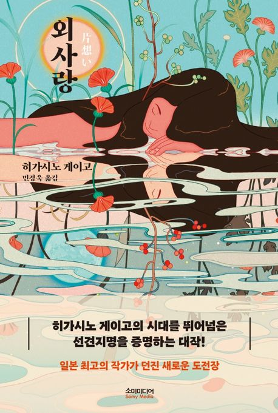
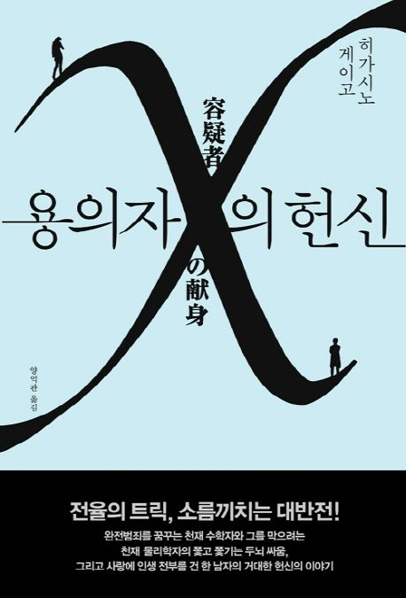
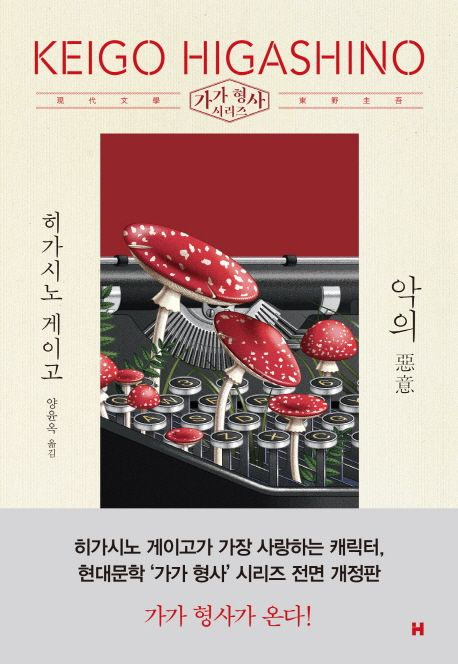
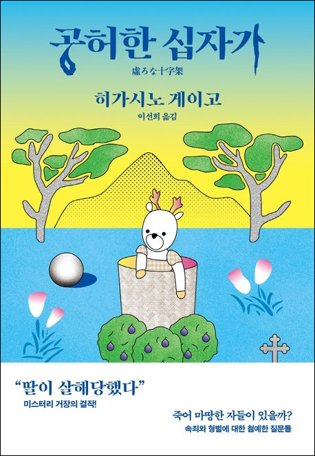

“일본 추리소설계를 대표하는 최고의 베스트셀러 작가”
추리소설 분야에서 특히 인정받고 있는 그는 누구도 상상하지 못한 소재를 자유자재로 변주하는 능력을 가진 탁월한 이야기꾼이다.
그의 작품은 치밀한 구성과 대담한 상상력, 속도감 있는 스토리 전개로 처음부터 끝까지 팽팽한 긴장감을 유지해 독자를 잠시도 방심할 수 없게 만든다.
일본을 대표하는 소설가이자 최고의 베스트셀러 작가가 된 히가시노 게이고는 첫 작품 발표 이후 20년이 조금 넘는 작가 생활 동안 35편이라는 많은 작품들을 써냈음에도 불구하고 늘 새로운 소재, 치밀한 구성과 날카로운 문장으로 매 작품마다 높은 평가를 얻고 있다.
생애
｜1958년 2월 4일 오사카에서 태어나 오사카 부립대학 전기공학과를 졸업했다.
곧바로 일본 전자회사인 '덴소사'에 입사해 엔지니어로 활동하며 틈틈이 소설을 쓴 특이한 이력을 가지고 있다.
1985년 『방과후』로 제31회 에도가와 란포 상을 수상했고 이를 계기로 전업작가가 되었다.
이공계 출신이라는 그의 특이한 이력은 『게임의 이름은 유괴』에서도 인터넷의 무료메일, 게시판, 불법 휴대전화, FAX, 비디오 카메라 등 하이테크 장비를 이용해 무사히 몸값을 받아내고 유괴를 성공해내는 장면을 사실적으로 묘사하는데 큰 도움이 되었다. 이과적 지식을 바탕으로 기발한 트릭과 반전이 빛나는 본격 추리소설부터 서스펜스, 미스터리 색채가 강한 판타지 소설에 이르기까지 폭넓은 장르의 작품들을 꾸준히 발표해왔다. 이 중 상당수의 작품이 영화와 텔레비전 드라마로 제작되어 큰 사랑을 받았다.
특징
치밀한 구성과 속도감 있는 스토리 전개, 예상치 못한 반전으로 마지막 페이지를 넘길 때까지 독자를 방심할 수 없게 만든다.
빙의나 의료 사고 등 녹록치 않은 소재를 능수능란하게 다루며 당대 첨예한 사회 문제를 수면 위로 끌어올려 추리소설에 국한되지 않은 다양한 소설을 쓰고 있다. 늘 새로운 소재와 치밀한 구성, 생생한 문장으로 매번 높은 평가를 받는 저력 있는 작가인 그는 일본을 대표하는 소설가답게 작품 중 19편이 영화와 드라마로 다시 독자들과 관객들을 만났다. 이제는 한국에서도 가장 사랑받는 작가 중 하나로 꼽히며, 전세계적 팬덤을 형성하고 있다.
수상이력
｜ 『비밀』
1999년 제52회 일본추리작가협회상
｜ 『용의자 X의 헌신』
2006년 제134회 나오키상, 제6회 본격미스터리대상 소설부문상
｜ 『나미야 잡화점의 기적』
2012년 제26회 시바타렌자부로상
｜ 『몽환화』
2013년 제48회 요시카와에이지문학상
｜ 『기도의 막이 내릴 때』
2014년 제48회 요시카와에이지문학상
주요작품
 |
 |
 |
 |
 |
| 나미야 잡화점의 기적 |
외사랑 |
용의자 X의 헌신 |
악의 |
공허한 십자가 |